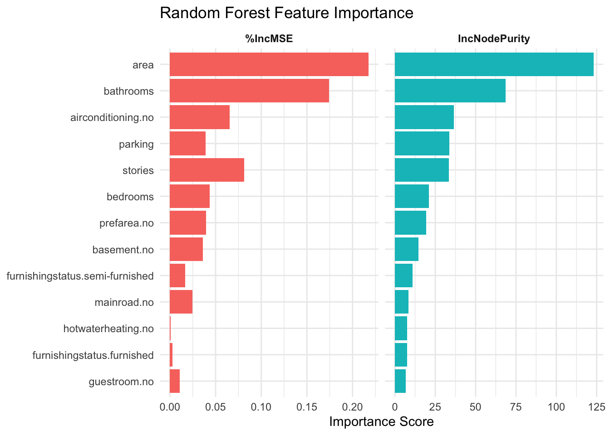
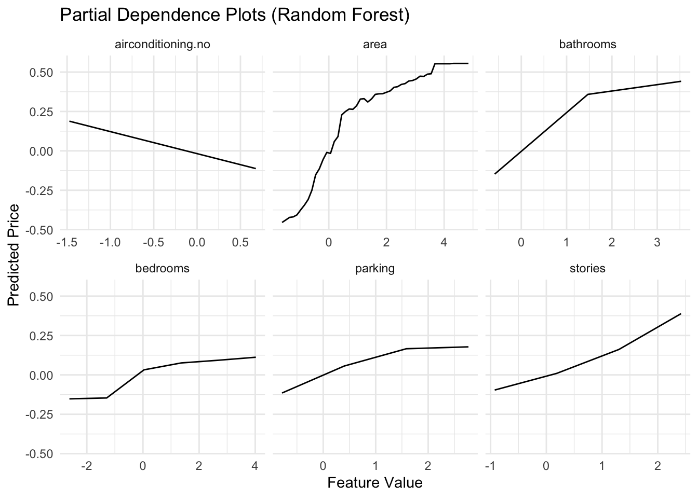

# Create stratified partition on the price variableset.seed(1234)idx <-createDataPartition(data2_raw$price, p =0.8, list =FALSE)train_raw <- data2_raw[idx, ]test_raw <- data2_raw[-idx, ]scaler <-preProcess(train_raw, method =c("center", "scale"))# Apply the scaler to both setstrain <-predict(scaler, train_raw)test <-predict(scaler, test_raw)# Confirm scaling: mean≈0, sd≈1train_summary <- train %>%summarise(across(everything(), list(mean =~mean(.), sd =~sd(.))))#Standardizing both predictors and the target (price) lets regularized models (Ridge, Lasso) work properly and makes error metrics comparable across features.# Linear Regressionlm_mod <-lm(price ~ ., data = train)# Ridge Regression (α = 0)library(glmnet)ridge_cv <-cv.glmnet(x =as.matrix(train[, -1]),y = train$price,alpha =0)ridge_mod <-glmnet(x =as.matrix(train[, -1]),y = train$price,alpha =0,lambda = ridge_cv$lambda.min)# Lasso Regression (α = 1)lasso_cv <-cv.glmnet(x =as.matrix(train[, -1]),y = train$price,alpha =1)lasso_mod <-glmnet(x =as.matrix(train[, -1]),y = train$price,alpha =1,lambda= lasso_cv$lambda.min)# Elastic Net (α = 0.5)enet_cv <-cv.glmnet(x =as.matrix(train[, -1]),y = train$price,alpha =0.5)enet_mod <-glmnet(x =as.matrix(train[, -1]),y = train$price,alpha =0.5,lambda = enet_cv$lambda.min)# k-Nearest Neighborslibrary(kknn)knn_mod <-train.kknn( price ~ .,data = train,kmax =10,kernel="optimal")# define evaluation function f <-function(true, pred) { mae <-mean(abs(true - pred)) mse <-mean((true - pred)^2) rmse <-sqrt(mse) r2 <-cor(true, pred)^2c(MAE = mae, MSE = mse, RMSE = rmse, R2 = r2)}# Generate predictionspred_lm <-predict(lm_mod, test)pred_ridge <-predict(ridge_mod, newx =as.matrix(test[, -1]))pred_lasso <-predict(lasso_mod, newx =as.matrix(test[, -1]))pred_enet <-predict(enet_mod, newx =as.matrix(test[, -1]))pred_knn <-predict(knn_mod, test)eval_lm <-f(test$price, pred_lm)eval_ridge <-f(test$price, pred_ridge)eval_lasso <-f(test$price, pred_lasso)eval_enet <-f(test$price, pred_enet)eval_knn <-f(test$price, pred_knn)# Aggregate results into a data frameresults <-rbind(Linear = eval_lm,Ridge = eval_ridge,Lasso = eval_lasso,ElasticNet = eval_enet,KNN = eval_knn) %>%as.data.frame() %>%rownames_to_column("Model")best_model <- results %>%slice_min(RMSE, n =1)
This section highlights the performance of each regression model and most importantly interprets key results from both numerical evaluation and feature analysis.
5.1 Feature Importance Across Models
After crossing all models, the top-ranked features were remarkably consistent:
Feature
Importance Signal (Ridge/Lasso)
Interpretation
area
Very High
Strong, direct effect on price—larger homes sell for more.
airconditioning
High
Adds perceived comfort and luxury, justifying a price premium.
Captures neighborhood desirability; a strong location proxy.
bathrooms
Moderate
Additional bathrooms correlate with size and utility.
furnishingstatus
Low–Moderate (varies by model)
Has subtle impact; may overlap with socioeconomic signals.
5.2 Heuristic Reasoning and Feature Relationships
Overlap:
Some features seem to measure overlapping concepts: area, stories, and bathrooms all relate to house size and livability. This suggests multicollinearity, and regularisation (Lasso/Ridge) will favor area as the most influential feature.
Similarly, prefarea and furnishingstatus might each serve as a proxy for socioeconomic desirability (furnishing might simply echo neighborhood-based norms or buyer wealth), but neither clearly dominates on its own.
Binary Characteristics and Step-Value Effects:
Some categorical features (e.g., airconditioning, basement, guestroom) exhibited step-function patterns in PDPs:
Air conditioning was on average associated with a large, positive shift in predicted price compared to homes without A/C.
Basement and Guestroom also had noticeable effects, but their utility appears to be highly context-dependent—e.g., basements may be more valued in suburban regions than urban cores or flood-prone zones.
5.3 Visualization Highlights
To better understand how feature influence predictions, these are the findings which were found:
Code
# IncNodePurity: total reduction in node impurity (variance) when splitting on that feature# X.IncMSE: increase in out‐of‐bag MSE if we randomly permute that feature (i.e. how much error jumps when the feature is “hidden”)library(randomForest)library(dplyr)library(tidyr)library(forcats)library(ggplot2)library(tibble) # for rownames_to_column()# 1) Fit RFrf_mod <-randomForest(x = train[, -1],y = train$price,importance =TRUE)# 2) Tidy importancerf_imp <- rf_mod$importance %>%as.data.frame() %>%rownames_to_column("feature") %>%pivot_longer(cols =c("%IncMSE", "IncNodePurity"), # use the actual column namesnames_to ="Metric",values_to ="Importance" )# 3) Plot with facetsggplot(rf_imp, aes(x = Importance,y =fct_reorder(feature, Importance),fill = Metric )) +geom_col() +facet_wrap(~ Metric, scales ="free_x") +labs(title ="Random Forest Feature Importance",x ="Importance Score",y =NULL ) +theme_minimal() +theme(legend.position ="none",strip.text =element_text(face ="bold") )

Code
# Partial Dependence Plots for Top RF Featureslibrary(pdp)library(purrr)# Pick the top 6 features by IncNodePuritytop_features <-names(sort(rf_mod$importance[,"IncNodePurity"], decreasing =TRUE))[1:6]# Compute PDPspdp_df <-map_dfr(top_features, function(var) { pd <-partial(rf_mod, pred.var = var, train =as.data.frame(train)) pd %>%rename(feature_value =1) %>%mutate(feature = var)})ggplot(pdp_df, aes(x = feature_value, y = yhat)) +geom_line() +facet_wrap(~ feature, scales ="free_x") +labs(title ="Partial Dependence Plots (Random Forest)",x ="Feature Value",y ="Predicted Price" ) +theme_minimal()

As mentioned above, area has a major character in both IncNodePurity and permutation-based importance, which means larger homes require higher prices. However as mentioned before the model relies too heavily on area and this will bring the risk of ignoring subtler-still meaningful signals in the data. Houses growing from under average to about half size increases its predicted price dramatically, especially in the area around 1-2 standard deviations above the mean. But beyond this “sweet spot,” price appreciation trails off, implying that ultra-large homes bring little in the way of incremental value unless they’re in the luxury bracket.
Bathroom count is subject to similar logic: going from 1 to 2 bathrooms gives a large increase in home value, which is perhaps a more practical requirement for families. But a third or fourth bathroom does little unless it is combined with other upscale features such as extra stories or square footage.
Stories (number of floors) also present a different kind of threshold: The curve of added value steepens after two stories, suggesting that multi-storied architecture has, for some reason, a cachet or a design appeal that isn’t entirely a matter of more space. This could be for penthouses, lofts, or split-level plans.
Improvement and Refinements:
Adjusting area for the neighborhood average (so it can fill it with “premium” square footage, not just square footage).
Including interactions (e.g. area × stories) to test whether extra space on higher floors sells at a price premium.
Categorical Amenities Add Tangible Value
Noticing that airconditioning.no (lack of air conditioning) and parking are among the most impure‐important. This tells us buyers penalize homes without a/c and reward those with parking more than, say, extra bedrooms or a semi‐furnished status.
The bar on the chart for airconditioning.no are smaller values than area/bathrooms but still quite significant, which suggests a/c is almost just as important as having more than one story or bathroom.
This brought a question that “Might airconditioning.no be picking up on a deeper underlying factor such as older homes, lower-income neighborhoods or properties lacking other modern-day amenities?” It might be interesting to stratify by age or location to check for absence in a/c is essentially serving as a proxy for something else.
Weak Features and Overfitting Risk
Towards the bottom of the chart shows that guestroom.no, furnishingstatus.furnished and hotwaterheating.no with minimal importance. In a more simple linear model, these may still receive non zero coefficients, but the Random Forest basically completely “ignores” them. The reason for this is because: their real impact on price is negligible though, or these binary splits rarely do anything to help homogeneity once the big kings (area, a/c, bathrooms) are on the board. Before dropping these variables completely, however, it is considerable to think about whether they may have nonlinear interactions, or only be important at certain sub-markets (eg. high-end furnished units).
Critical Takeaway
area and bathrooms are left right where sellers would expect to see them, as the “headline” determinants of price point, while the next tier (air conditioning, parking, stories) illustrate an amenity driven market of housing. However, the overwhelming importance of area screams that it is necessary to have a better feature engineering for it - for example, maybe normalizing by lot size or adding something non-linear based on location/area, and forcing the model to learn some more complex story than “bigger = more expensive.”